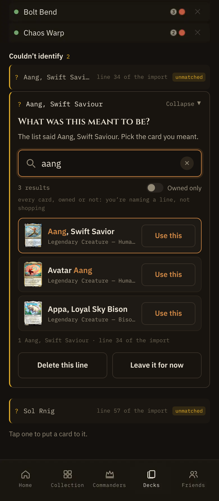

When an import line can't be matched, its row opens a search (state 16). On a phone the first result, the one most likely to be right, showed only a bare ↵, which doesn't read as a button. Same flaw as the Add panel's quick-add rows, same fix. Every frame is the shipped expander rendered with the shipped CSS (Amonkhet theme) under the shipped deck page capture; the right-hand frame has this addendum's change applied.
Design calls
1px --border-strong, radius 7, --accent-text 13/600, “Use this”. The bare ↵ is gone.onClick on the li). The row is 63 tall at 390, so the tap target is the full row, well over 44. Nothing inside the row opens card details, so there is no second target to keep apart.role="option" is a nested interactive control, which a listbox doesn't allow, and a screen reader would stop on it as a second item. The ghost stays aria-hidden, as the shipped ghost on the other rows already is. What a screen reader hears doesn't change.--accent border; its Use looks like every other row's, so the most likely card is as plainly usable as the rest.:active on the option, group-active on the ghost) gives the ghost the --elevated fill and the --accent border, the same press look as the Add panel's ghost. No new token.That’s Aang, Swift Savior. 97 built now. The shipped 0.5 dim on pending never paints. Drawn in States, S4.↵ use this where a keyboard is likely: md and up with a fine pointer. The desktop render is byte-identical to main (Desktop board).The first result shows only a small ↵ at the right edge.

Every result has the same Use. The brass edge still says which row is first.
Screen readers, ↵ and copy
aria-activedescendant points at the active option, each option keeps its aria-label (name, type, colors, owned) and aria-selected. Selecting an option (VoiceOver double-tap) fires the same onClick and uses that card.↵ was the only one this list drew on a phone. The phone keyboard's return still uses the top match, as shipped; the Use on that row now says it.useShort “Use this” on every phone row, use “Use this card” at md, activeRowHint “↵ use this” on desktop's active row only. All in deckImportCopy.resolve.